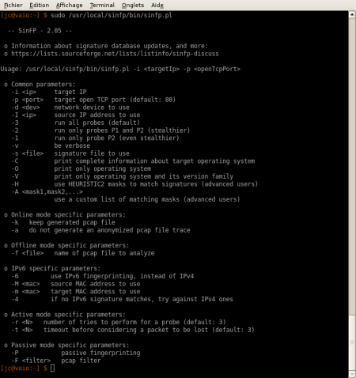

Last week, I found out a very interesting program, SinFP (those who are french and read the Misc magazine must already know ;) ).
Its goal is to help you detecting what operating system a remote machine is running.
Well, you will tell me that we already have many programs that does this job, starting from the so famous nmap… but the approach is quite different this time.
Let me explain in a short, but I hope clear, version.
A program like Nmap usually scan all the open ports of a remote IP address. According to the answers it gets back on each port, and using a signature database, nmap can identify the target OS.
Sounds good. But actually, SinFP shows there is a better way to do.
The author of SinFP got to the conclusion that nowadays, most of the IP addresses are managed by a NAT / PAT equipement (firewall, router). It means that behind a single public IP address, there is not only the firewall itself, but several machines and systems for each open service. For instance, you will have the HTTP port redirected to a Windows IIS machine, the SMTP one to a Linux box, the DNS to a solaris server, and so on.
So obviously Nmap just can’t be so reliable in such a case. How trustful will its detection be if it finds a Postfix service and a IIS service running on the same address ?
The solution of SinFP is rather elegant. First, considering the NAT problem, it focuses on one port. So you are practically sure that you are on the final machine, just the proxy case is left.
On this port, it tries fingerprinting with its internal signature database. The way it does it makes all the strengh of SinFP.
It sends 3 requests, similar to any request generated by the system call connect() :
P1 = P2 without option P2 = TCP SYN with options P3 = TCP SYN-ACK
For your scan, you can also use only P2, for stealthiness.
Then it catches the answers to these requests and generate from them a single signature with some selected patterns.
Finally, it compares it with the signatures in its database. The mathematic model it uses is far too complex for me to explain, but just now it tries to find the closest signature as possible, accepting some variations due to specific configurations or network conditions.
You will get an answer like that :
IPv4: HEURISTIC0/P1P2P3 <detected OS>
It means that the signature matched all the requests, P1, P2 and P3. This result is the most reliable.
If you get P1P2, it means that the signature did not fully match the one in the database… but it is still pretty reliable, as we will see further.
As a final try, if there is still no exact signature, SinFP will try to modify the signature according to a transformation mask to get closer to an existing ones.
If you want to have more details on how it works, you should go the website of the author : http://www.gomor.org
But now, let’s have a quick and dirty test, comparing this tool with Nmap :
Debian Etch box (2.6 kernel), various open ports with real services
Nmap
$ nmap -sS -O -PI -PT 192.168.1.230 Starting Nmap 4.10 ( http://www.insecure.org/nmap/ ) at 2006-12-17 06:26 Interesting ports on xxx (192.168.1.230): Not shown: 1674 closed ports PORT STATE SERVICE 22/tcp open ssh 25/tcp open smtp 53/tcp open domain 80/tcp open http 443/tcp open https Device type: general purpose Running: Linux 2.4.X|2.5.X|2.6.X OS details: Linux 2.4.7 - 2.6.11
SinFP
$ /usr/local/sinfp/bin/sinfp.pl -i 192.168.1.230 80 P1: B10113 F0x12 W5840 O0204ffff M1460 P2: B10113 F0x12 W5792 O0204ffff0402080affffffff4445414401030302 M1460 P3: B00000 F0 W0 O0 M0 IPv4: HEURISTIC0/P1P2: GNU/Linux: Linux: 2.6.x
Conclusion : SinFP gives the exact result (Linux 2.6.X) when Nmap is detecting a Linux box, nothing more.
FreeBSD 6.1, no open port
Nmap
$ nmap -sS -O -PI -PT 192.168.1.115 Starting Nmap 4.10 ( http://www.insecure.org/nmap/ ) at 2006-12-17 06:37 CET Warning: OS detection will be MUCH less reliable because we did not find at least 1 open and 1 closed TCP port All 1679 scanned ports on 192.168.1.115 are closed MAC Address: xx:xx:xx:xx:xx:xx Device type: general purpose Running: Apple Mac OS X 10.1.X, Apple Mac OS 8.X, FreeBSD 5.X|6.X Too many fingerprints match this host to give specific OS details
SinFP
$ /usr/local/sinfp/bin/sinfp.pl -i 192.168.1.115 80 *** Cannot fingerprint a closed or filtered port
Conclusion : No surprise, SinFP can’t be tested on this point, since it applies to an open port (I wanted to check that you follow :D ). That is not the goal of SinFP to do differently. However, it was interesting to see that Nmap gives a answer. Not precise, but at least it guesses that it is a BSD kernel.
FreeBSD 6.1, open port with NetCat
Nmap
$ nmap -sS -O -PI -PT 192.168.1.115 Starting Nmap 4.10 ( http://www.insecure.org/nmap/ ) at 2006-12-17 06:56 CET Interesting ports on 192.168.1.115: Not shown: 1678 closed ports PORT STATE SERVICE 80/tcp open http MAC Address: xx:xx:xx:xx:xx:xx No exact OS matches for host </strong>(If you know what OS is running on it, see http://www.insecure.org/cgi-bin/nmap-submit.cgi). TCP/IP fingerprint: SInfo(V=4.10%P=i686-pc-linux-gnu%D=12/17%Tm=4584DC41%O=80%C=1%M=0012F0) TSeq(Class=TR%IPID=I%TS=1000HZ) T1(Resp=Y%DF=Y%W=FFFF%ACK=S++%Flags=AS%Ops=MNWNNT) T2(Resp=N) T3(Resp=Y%DF=Y%W=FFFF%ACK=S++%Flags=AS%Ops=MNWNNT) T4(Resp=Y%DF=Y%W=0%ACK=O%Flags=R%Ops=) T5(Resp=Y%DF=Y%W=0%ACK=S++%Flags=AR%Ops=) T6(Resp=Y%DF=Y%W=0%ACK=O%Flags=R%Ops=) T7(Resp=Y%DF=Y%W=0%ACK=S%Flags=AR%Ops=) PU(Resp=Y%DF=N%TOS=0%IPLEN=38%RIPTL=148%RID=E%RIPCK=E%UCK=0%ULEN=134%DAT=E)
SinFP
$ /usr/local/sinfp/bin/sinfp.pl -i 192.168.1.115 80 P1: B11113 F0x12 W65535 O0204ffff M1460 P2: B11113 F0x12 W65535 O0204ffff010303010101080affffffff4445414404020000 M1460 P3: B11120 F0x04 W0 O0 M0 IPv4: HEURISTIC0/P1P2P3: BSD: FreeBSD: 6.0 IPv4: HEURISTIC0/P1P2P3: BSD: FreeBSD: 6.1 IPv4: HEURISTIC0/P1P2P3: BSD: FreeBSD: 7.0
Conclusion : well, I was quite surprised. Nmap is totally lost. Why did it do a better job with no open port at all ? I haven’t searched yet, so if someone has a clue to explain well this pattern, please tell me. I have a feeling that it is because of the nmap port on FreeBSD, but I am not sure to be right.
SinFP does a pretty good job, all 3 patterns displayed concern FreeBSD from 6.0 to 7.0.
Debian Sarge (2.4 kernel), various open port, real services
Nmap
$ nmap -sS -O -PI -PT 192.168.1.110 Starting Nmap 4.10 ( http://www.insecure.org/nmap/ ) at 2006-12-17 06:46 CET Interesting ports on 192.168.1.110: Not shown: 1671 closed ports PORT STATE SERVICE 22/tcp open ssh 25/tcp open smtp 80/tcp open http 111/tcp open rpcbind 113/tcp open auth 199/tcp open smux 443/tcp open https 907/tcp open unknown MAC Address: xx:xx:xx:xx:xx:xx Device type: general purpose Running: Linux 2.4.X|2.5.X OS details: Linux 2.4.0 - 2.5.20 Uptime 0.354 days (since Sat Dec 16 22:17:30 2006)
SinFP
$ /usr/local/sinfp/bin/sinfp.pl -i 192.168.1.110 443 P1: B10113 F0x12 W5840 O0204ffff M1460 P2: B10113 F0x12 W5792 O0204ffff0402080affffffff4445414401030300 M1460 P3: B10120 F0x04 W0 O0 M0 IPv4: HEURISTIC0/P1P2P3: GNU/Linux: Linux: 2.4.x
Conclusion : Here I think we can consider that both Nmap and SinFP give the exact answer. This is a draw here.
Windows 2000 server, various open port, real services
Nmap
$ nmap -sS -O -PI -PT 192.168.1.20 Starting Nmap 4.10 ( http://www.insecure.org/nmap/ ) at 2006-12-17 07:11 CET Interesting ports on moon.int.jcbnet.org (192.168.1.20): Not shown: 1656 closed ports PORT STATE SERVICE 21/tcp open ftp 25/tcp open smtp 42/tcp open nameserver 53/tcp open domain 80/tcp open http 88/tcp open kerberos-sec 135/tcp open msrpc 139/tcp open netbios-ssn 389/tcp open ldap 443/tcp open https 445/tcp open microsoft-ds 464/tcp open kpasswd5 593/tcp open http-rpc-epmap 636/tcp open ldapssl 1026/tcp open LSA-or-nterm 1029/tcp open ms-lsa 1112/tcp open msql 1723/tcp open pptp 3268/tcp open globalcatLDAP 3269/tcp open globalcatLDAPssl 3372/tcp open msdtc 5800/tcp open vnc-http 5900/tcp open vnc MAC Address: xx:xx:xx:xx:xx:xx Device type: general purpose Running: Microsoft Windows 95/98/ME|NT/2K/XP OS details: Microsoft Windows Millennium Edition (Me), Windows 2000 Professional or Advanced Server, or Windows XP
SinFP
$ /usr/local/sinfp/bin/sinfp.pl -i 192.168.1.20 5900 P1: B11113 F0x12 W64240 O0204ffff M1460 P2: B11113 F0x12 W64240 O0204ffff010303000101080a000000000000000001010402 M1460 P3: B11021 F0x04 W0 O0 M0 IPv4: HEURISTIC0/P1P2P3: Windows: Windows: 2000
Conclusion : SinFP is right and far more precise than Nmap.
As you can see, the results of SinFP are just fine for each of my tests. Ok, it was not the perfect test, it was rather quick and dirty, but personnally it is enough for me to be convinced. It will be from now one of my favorite tools.
When it comes to OS fingerprinting, SinFP makes a better job than Nmap. But we should not be hard on Nmap. They are different tools, and we actually should not have compared them directly. Nmap is an excellent port scanner for which OS detection is just an option, while SinFP focusses on it.
Its approach is new, ingenious and efficient.
I could not test SinFP on more systems for now, but I will update here if I can. You can also comment here if you find a system that could not be detected by SinFP. In that case, contact also the author of SinFP, sending him the new fingerprint.
The more signatures there will be, the more efficient this tool will be !
I did contact him, so I can tell you he is very reactive, helpful, and willing to improve his program.
SinFP : http://www.gomor.org
